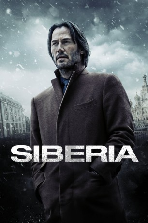
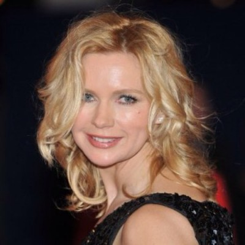
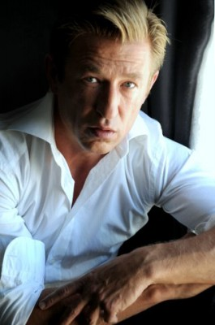
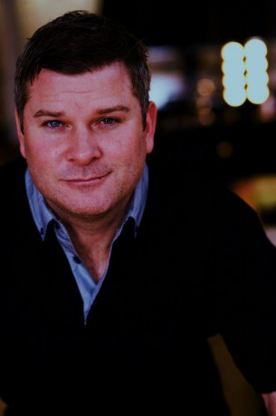
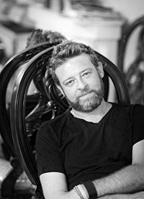
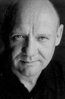

#10589 Siberia - Tödliche Nähe
Alternativ: Siberia (Englischer Titel)
 
 IMDB-Wertung: 4.3 / 10
IMDB-Wertung: 4.3 / 10  Metascore: 34
Metascore: 34 
Lucas Hill, ein nicht ganz lupenreiner Diamantenhändler, fliegt nach Russland, um dem mafiösen Oligarchen Boris Volkov einige extrem seltene Edelsteine zu verkaufen. Doch Hills Kontaktmann vor Ort ist verschwunden und mit ihm die kostbare Ware. Um diese wiederzubeschaffen, muss Lucas ins frostige Sibirien reisen, wo ihm Katya, die schöne und weltgewandte Besitzerin einer kleinen Bar, bald aus tödlicher Bedrängnis hilft. Denn ein Mann wie Volkov verzeiht keine Fehler und seine Leibwächter kennen kein Erbarmen, wenn es um krumme Deals, verletzte Ehre und Rache geht.
Jahr: 2018
Dauer: 104 Minuten
FSK: 16
Land: USA Studio: Saban FilmsTonspuren: DTS - ,
Untertitel: Deutsch,
Auflösung: 1080p (1920x808) Größe: 9256 MB
Genre: Thriller, Krimi, Liebe
Regisseur: Matthew Ross
Drehbuch: Scott B. Smith, Stephen Hamel, Scott B. Smith
Soundtrack: Danny Bensi, Saunder Jurriaans
Darsteller:
 Keanu Reeves als Lucas Hill
Keanu Reeves als Lucas Hill- Boris Gulyarin als Pyotr
- Ashley St. George als Christa
-  Veronica Ferres als Raisa
-  Pasha D. Lychnikoff als Boris Volkov
- Rafael Petardi als Pavel
-  Darren Ross als Range Rover Driver
- Taran Vitt als Leo
- James Gracie als Vincent
 Ana Ularu als Katya
Ana Ularu als Katya-  Dmitry Chepovetsky als Ivan
- Kis Yurij als Vasily
 Aleks Paunovic als Yefrem
Aleks Paunovic als Yefrem- Vlad Stokanic als Andrei
- Molly Ringwald als Gabby
- Alex Kudrytsky als Maxim
- Cory Chetyrbok als Anton
- Nazariy Demkowicz als Vladimir
- Morgan Holmstrom als Female Guest #1
- Bradley Sawatzky als Rostov
-  Eugene Lipinski als Polozin
- Vitali Makarov als Markov
- Andrew Degryse als Assassin #1
- Jeff Strome als Assassin #2
- Bj Verot als Assassin #4
- Cindy Myskiw als Passersby (uncredited)
 Lorrie Papadopoulos als Mirny Resident (uncredited)
Lorrie Papadopoulos als Mirny Resident (uncredited)- Connor Peterson als Young Maxim (uncredited)
- Derek James Trapp als Miner (uncredited)
- Elliot Lazar als Sergei - Bellboy
- Vladimir Shklyar als Boris Bodyguard #1
- Mikhail Bogdanov als Mercedes Driver
- Rayna Esposito als Female Guest #2
- Lindsy Baudry als Female Guest #3
- Ruslan Rusin als Utkin
- Richard Thomas als Assassin #3
- Anders Strome als Assassin #5
- Jim Kirby als Hotel Guest (uncredited)
Datei: X:\2018(N-Z)\Siberia - Tödliche Nähe (2018, FSK16, 1920x808).mkv seit 28.01.2019
Festplatte: HD 2018(G-Z)-2019(A-Z)
 Es gibt insgesamt 172 Filme in der Gruppe '2018(N-Z)'
Es gibt insgesamt 172 Filme in der Gruppe '2018(N-Z)'